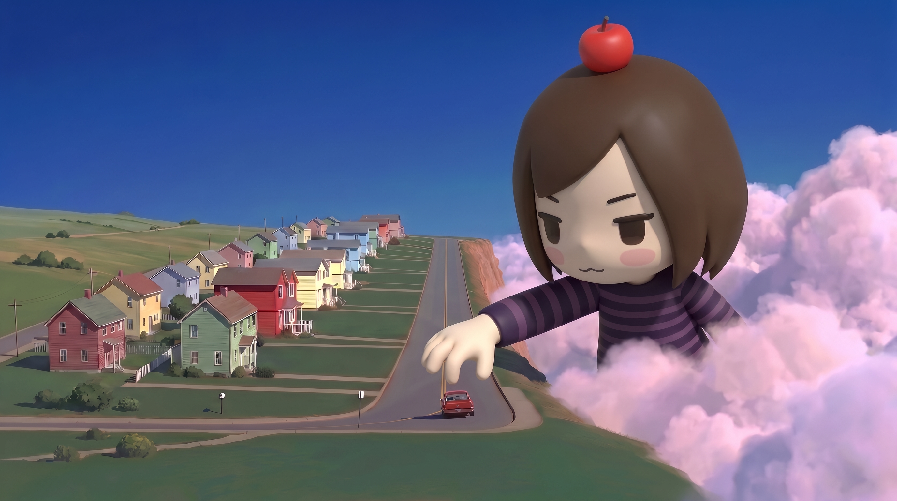
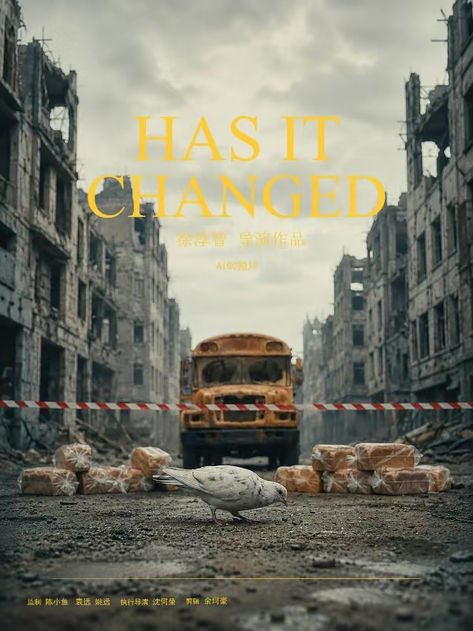
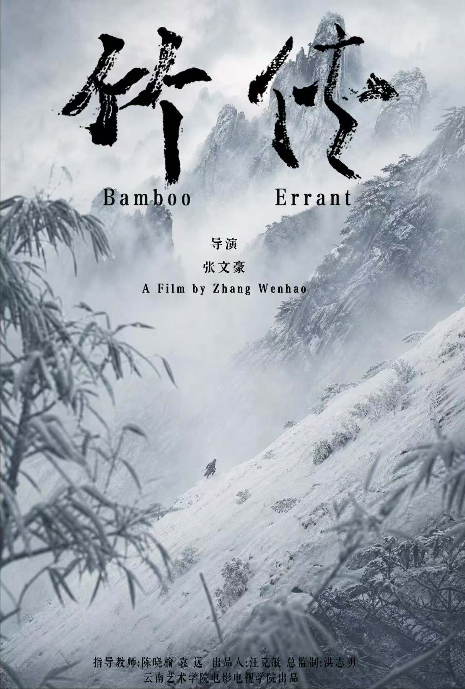

云南艺术学院24级影视摄影与制作专业学生，热爱运动、绘画与摄影，专注AIGC实验影像创作，探索AI技术与影视叙事的融合边界。
创作时间：2026年6月
担任角色：执行导演｜AIGC生成｜剧本编辑｜美术设计
本片构建一个信奉社会达尔文主义、暴力泛滥的反乌托邦世界。当世间所有暴力武器突然失效，人类却依旧无法挣脱固有的冲突思维。影片借此呼吁和平与发展，反思战争与人性。
灵感来源于《太空漫游2001》《人类之子》。探讨工具消失之后，人性是否会随之改变。技术可以销毁武器，但根植于人内心的偏见与对抗，才是冲突真正的源头。
本片需要一套高度辨识度的美术体系，同时融合未来科技质感，叠加战争带来的破败、肃杀氛围，视觉统一难度高。作为第一部主导的短片作品，团队查阅大量影像资料，反复调试多种AI生成模型，深度理解当下AIGC影像工具的能力边界，完成从剧本构思到AI视觉落地完整链路。
使用工具：Seedance2.0、SORA、Nanobanana、Gemini
获奖参展：2026 釜山国际艺术节 AIGC短片单元 铜奖

创作时间：2026年6月
担任角色：AIGC生成、音乐制作
将传统东方武侠叙事与AIGC影像技术结合，用AI演绎东方江湖意境，探索传统武侠美学在AI时代全新视觉表达，用新技术重新诠释侠义精神。
以竹为意象，竹代表坚韧、风骨与侠义。在虚实交织的AI江湖之中，探讨侠之大者的内核，跳出传统武侠套路，用现代影像视角重新解读东方侠义精神。
难点在于AIGC还原传统武侠人物动作连贯性、东方水墨武侠氛围感，兼顾人物表演、武打镜头逻辑。同时独立完成全片音乐设计，音乐需要贴合江湖氛围感，与AI生成画面情绪做到匹配统一。在不断调试模型、调整提示词，平衡AI随机性与叙事可控性。
使用工具：Seedance2.0、SORA、Gemini、PR、达芬奇
获奖参展：麻园电影节 最佳AIGC奖；入围长春电影节AIGC短片单元

云南艺术学院 影视摄影与制作专业本科在读，拥有两年影像创作经历。主要创作方向为AIGC实验短片、纪录片摄影，横跨剧本编写、美术设计、AI影像生成、后期剪辑全流程。
热衷于意识流实验短片、音乐概念短片、现实向剧情片创作。喜欢将传统叙事与AIGC新技术结合，不局限单一媒介，尝试用影像探讨人性、社会、文化议题。既尊重经典影视语言，也愿意拥抱AI带来全新影像可能性。
昆汀·塔伦蒂诺、诺兰，受到他们叙事结构、镜头语言、主题表达的启发。
| 时间 | 院校 | 专业 | 学历 | 主修方向 |
|---|---|---|---|---|
| 2024‑至今 | 云南艺术学院 | 影视摄影与制作 | 本科 | 影视拍摄、AIGC影像、短片创作 |
| 时间 | 项目名称 | 岗位 | 负责内容 | 项目成果 |
|---|---|---|---|---|
| 2026‑06 | 《DID IT CHANGE》AIGC短片 | 执行导演 | 剧本编辑、AIGC生成、美术设计 | 釜山国际艺术节AIGC短片铜奖 |
| 2026‑06 | 《竹侠》AIGC武侠短片 | AIGC生成、音乐设计 | AI画面生成、全片音乐设计 | 麻园电影节最佳AIGC奖，入围长春电影节AIGC短片单元 |
| 时间 | 奖项名称 | 主办方 | 荣誉 |
|---|---|---|---|
| 2026 | 釜山国际艺术节 AIGC短片单元 | 釜山国际艺术节组委会 | 铜奖｜《DID IT CHANGE》 |
| 2026 | 麻园电影节 最佳AIGC奖 | 麻园电影节组委会 | 最佳AIGC奖｜《竹侠》 |
| 2026 | 长春电影节 AIGC短片单元入围 | 长春电影节组委会 | 作品入围｜《竹侠》 |
社交平台：微信 / 小红书 / B站 / ArtStation / Behance / Instagram（自行填入链接）
合作寄语：欢迎短片项目合作、影像作品交流、学术探讨、实习求职沟通。期待与各位创作者碰撞想法。